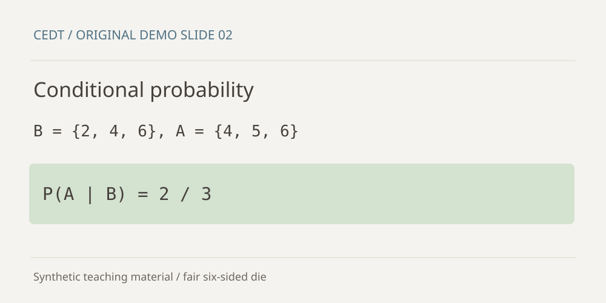

Lesson 02 · สไลด์สาธิตที่สร้างขึ้นใหม่ · ~15 นาที
เมื่อรู้ข้อมูลเพิ่ม: Conditional probability
เป้าหมายบทนี้: จำกัด Sample space แล้วนับใหม่ และอธิบายคำตอบได้
1แนวคิด
เมื่อรู้ว่าผลทอยเป็นเลขคู่ ผลลัพธ์ที่ยังเป็นไปได้เหลือ {2, 4, 6} ถ้าถามต่อว่าแต้มมากกว่า 3 หรือไม่ ผลลัพธ์ที่ผ่านทั้งสองเงื่อนไขคือ {4, 6}

P(A | B) = P(A ∩ B) / P(B) โดย P(B) > 0
P(แต้มมากกว่า 3 | เลขคู่) จะเท่ากับ P(เลขคู่ | แต้มมากกว่า 3) เสมอไหม?
ไม่เสมอ แม้ตัวอย่างนี้เท่ากันที่ 2/3 แต่เมื่อเปลี่ยนเป็น “มากกว่า 4” จะได้ 1/3 กับ 1/2 ตามลำดับ
ตัวหารคือเงื่อนไขที่รู้แล้ว B ไม่ใช่ Event A ที่กำลังถามหา
2ลองดูตัวอย่าง
ในเลขคู่ {2, 4, 6} มี 2 ผลลัพธ์ที่มากกว่า 3 ดังนั้น P(มากกว่า 3 | เลขคู่) = 2/3
3ลองทำด้วยตัวเอง
ติดตรงไหน ถาม Claude ได้เลย บอกเลขบทกับเลขข้อมาด้วย